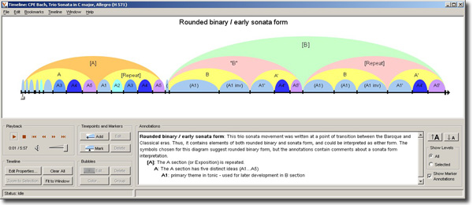

SALAMI (Structural Analysis of Large Amounts of Music Information) is an innovative and ambitious computational musicology project.
To date, musical analysis has been conducted by individuals and on a small scale. Our computational approach, combined with the huge volume of data now available from such source as the Internet Archive, will: a) deliver a very substantive corpus of musical analyses in a common framework for use by music scholars, students and beyond; and, b) establish a methodology and tooling which will enable others to add to this in the future and to broaden the application of the techniques we establish. A resource of SALAMI’s magnitude empowers musicologists to approach their work in a new and different way, starting with the data, and to ask research questions that have not been possible before.
Structural analysis of music (or formal analysis) is one of the most fundamental analyses performed by music scholars (music theorists, musicologists, ethnomusicologists, etc.). The formal analysis usually precedes any other types of analysis because it provides the overall view of the piece. The main goal of formal analysis is to find similar sections within a piece of music and label these sections, such as ABA and ABCB’A. With further analysis, these sections can be marked with predefined labels such as Intro, Verse, Bridge, Chorus, Verse, and Outro (popular music) or Introduction, Exposition, Development, Recapitulation, and Coda (sonata form).
Thus, the formal analysis is potentially useful in classifying different genres of music and it can be used to compare different styles of composition within a composer’s works or between composers. It can also be used to understand historical influences over time and location. By analyzing large sets of music, new discoveries can be made about these questions. Another important aspect of formal analysis is that it can be applied to almost any music, anything from Russian folk songs to Byzantine music to Miles Davis or to electronic music. Furthermore, there are many musics in the world where other types of analysis, such as harmonic, motivic, or rhythmic, have little meaning.
Variations 2 Audio Timeliner from Indiana University is an audio annotation and analysis tool for creating and labeling bubble diagrams. These diagrams can be used to navigate music or other audio for detailed study.

Traditionally, structural analysis of music has been done manually, with very few exceptions (e.g., Huron 2001, Järvinen et al. 1999). This is a time-consuming task and only a small sample of music has been analysed. Moreover, since there are no standard formats for describing the structure (see various examples of traditional analysis in Appendix B), let alone a standard machine-readable file format, there is no simple way to compare large amount of music based upon its various internal structures. Even within the field of Music Information Retrieval (MIR) research, with its evolving computational approach to music analysis, the majority of structural analysis work has been performed on a few hundred pieces, at best. SALAMI will be analysing ~350,000 pieces (~23,000 hours). The algorithms chosen, modified and/or developed for use by SALAMI will be trained and evaluated using a set of ground-truth data based upon several thousand exemplars created by trained musicologists. This research paradigm is thus orders of magnitude greater than any previous research. The range of different kinds of music that will be analysed will be of far larger variety than anything previously done. Most prior analytic research work has focused primarily on Western popular and “classical” music. Our vast dataset includes a wide variety of music from all over the world, from many time periods, and includes folk music, “classical” music, contemporary music, improvised music, and live music. The ability to analyse music directly in the audio format is another important contribution of this project. In the past, most music structural analyses have been conducted using only the musical scores that were readily available, especially with European “classical” music. The new audio-based structural information created by SALAMI should offer novel perspectives to music research especially for ethnomusicologists where no scores exist for many of the music cultures. Although there is much information to be gained from studying audio data, the technical expertise needed to analyse music in audio format has prevented most music researchers from dealing with the actual performance of the music. With the recent revolution in MIR and CM research, many new tools and algorithms to analyse and to visualise music audio have been developed, the most promising of which will be investigated, modified and then deployed by the SALAMI team. For music scholars, having access to a large corpus of world music that is already analysed will be of great significance, providing new perspectives and insights previously unavailable. They will be able to study the popularity or decline of various forms over time and geographical space as well as discovering evolutionary and revolutionary changes in musical forms. SALAMI will be providing actual research examples (along with web-based facilities to conduct and/or replicate the research) that demonstrate how these types of questions can be investigated based on the resultant analytical data. By using uniform methods to analyze a large quantity of music from all over the world SALAMI will empower musicologists and interested music enthusiasts to compare, contrast and explore music structures in ways only limited by their imaginations.